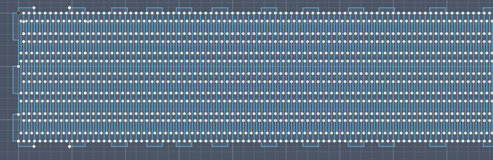
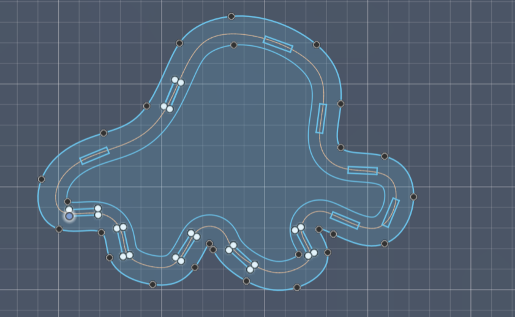
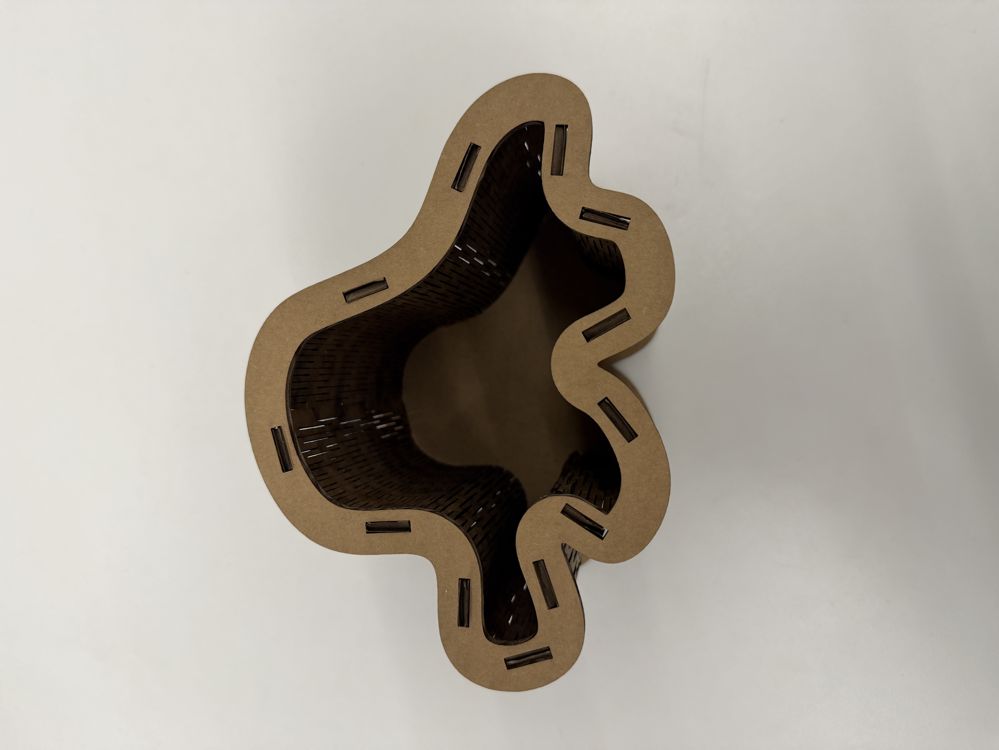
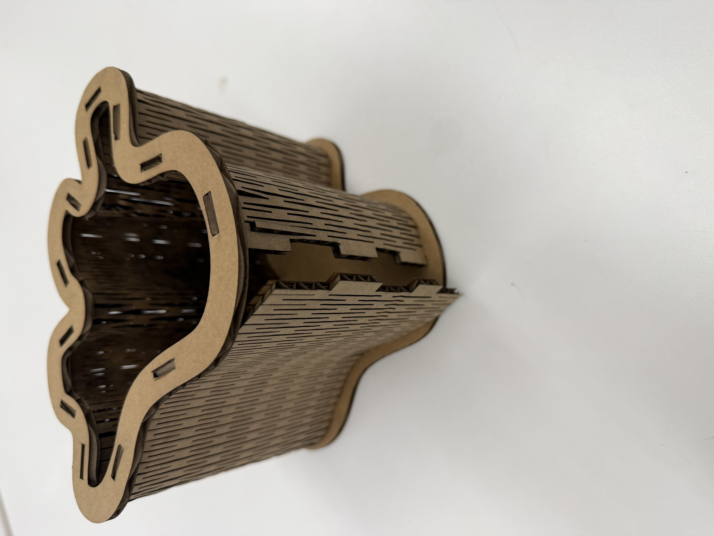
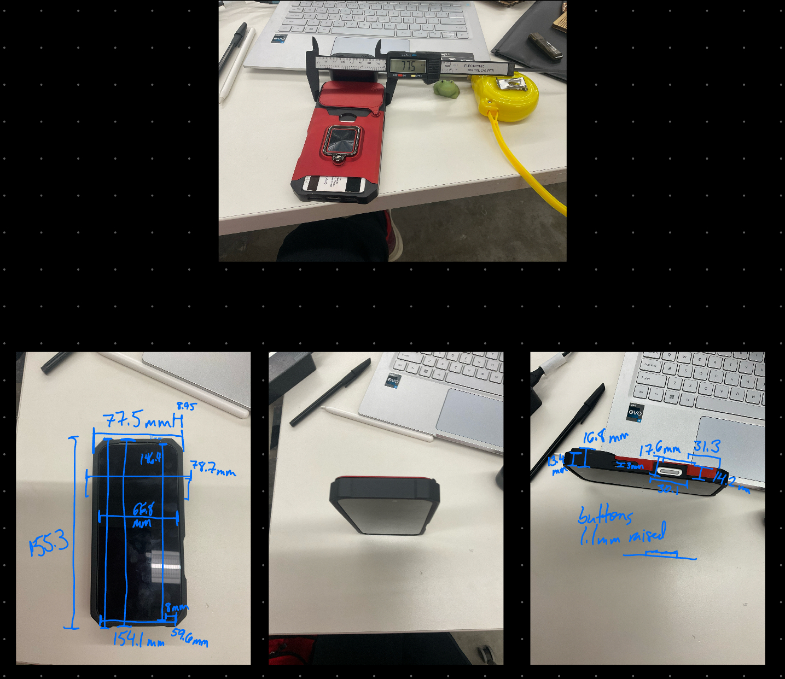
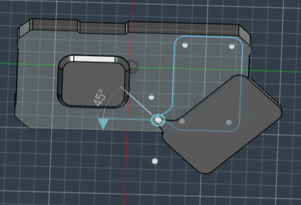
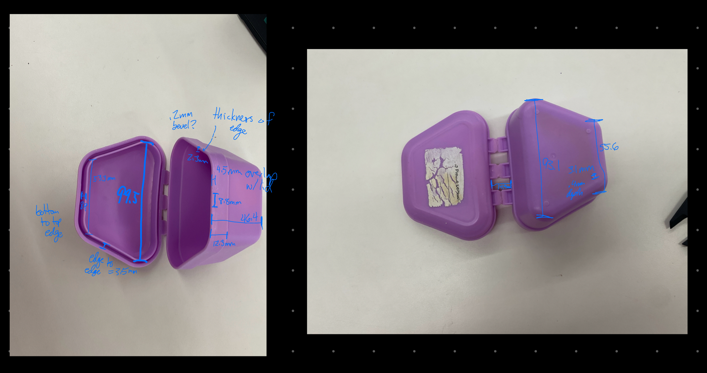

<div class="textcontainer">
<p class="margin"> </p>
<h3>Week 2: 2D Design & Cutting</h3>
<br>
Still thinking about my ideal website design...
<br><br>
<p class="margin"> </p>
<div class="flexrow">
<a id="btn" href="./2026-02-11 Octopus Box.f3d" download>Dowload the Octopus Box (and living hinge) in Fusion
</a>
</div>
<p class="margin"> </p>
<br><br>
<h4>Assignment 1: Make a Box</h4>
I made a box! It is an octopus!
<br>
I was inspired by some of the "living hinges," aka wood or cardboard with many cut lines to make the material bendy, in the box by the laser cutter.
My first idea was to make a bloody belly comb jelly shaped box. Then I pivoted to an octopus because its shape is more recognizable.
<br><br>
First, I prototyped the living hinge. Yes the cardboard caught fire twice, but setting cutting at -5% strength really helped and I got a run without fire. The living hinge is in the top right and it was bendy.
<figure>
<img src="./LivingHingeWithFire.JPG" alt="Image of a piece of cardboard with many lines in it and other areas of uncut cardboard slightly scorched." width=37% height=13%>
<figcaption> The living hinge is at the top right. You can guess where the fires were. Shoutout the fire blanket.
</figcaption>
</figure>
After convincing myself this would work, I designed the octopus outline and added holes into the box for tabs to slot into taking kerf into account. I also made prototypes of the connecting joint and tabs to make sure everything fit. To determine the distances between the tabs for the living hinge piece, I used the plane along path feature. Below are images of some of the sketches, and the resulting pieces are below that.
<figure>


<figcaption> The living hinge is on the left and the octopus on the right.
</figcaption>
</figure>
<figure>
<img src="./OctopusComponents.JPG" alt="Fill in later." width=37% height=13%>
<figcaption> The living hinge is at the top. The octopus base is at the bottom middle. The left is the hinge test piece and the right is the tab insert test piece.
</figcaption>
</figure>
Thankfully the tabs fit! Thank goodness cardboard is a forgiving material. It was hard to fit them in since the hinges are under lots of pressure. This made me decide to do a cutout on the top edge at an undisclosed time last night.
<br>
<figure>

<figcaption> The finished box.
</figcaption>
</figure>
Now the box was finished! I added a face in the bottom for fun. I recognize this may be too small of a box, but I had fun. As a bonus feature, things can fall out of the box through the ill-designed tab.
<br><br>
<figure>

<figcaption> The bonus opening feature.
</figcaption>
</figure>
Improvements for the future:
<ul>
1. Put another tab on the other end of the joining area <br>
2. Make the box bigger<br>
3. Draw the face on the base before assembly
</ul>
<br>
Thanks to Kassia for helping me print my Useless Box, jumpstarting my laser cutting abilities, Victor for his late night OH, Bobby for his normal hours OH, and Hannah for helping export the first DXF sketch.
<br><br>
<h4>Assignment 2: Fusion 360 Tutorial</h4>
For tutorials, I watched various videos on the different functions as I needed them (ex. joints, extrusions, sketches) on Youtube and applied them to my own model.
<br><br>
<h4>Assignment 3: Fusion Modeling</h4>
I decided to model my iPhone case because I am hoping to use it in my final project and my retainer case for fun.
<br><br>
<h5>Phone Case</h5>
First, I measured some measurements with my phone. The key takeaway is that you can't have too many measurements.
Next, I modeled. I mainly sketched then extruded. It was fun to think about how to sketch then trim to form the phone case base. Assembly resulted in the most learning for me and my phone camera cover now rotates like it does on my actual phone! Yay!
<br>
<figure>


<figcaption> Phone with cover movement and phone measurements.
</figcaption>
</figure>
<br>
<h5>Retainer Case</h5>
[I did measure, but the model is to be finished sorry I procrastinated too much. I know how I would model it but haven't found the hour to do so.]
[I also need to find a balance between actual assignments and making things and to be realistic with the amount of time I have]
<figure>

<figcaption> Retainer case measurements.
</figcaption>
</figure>
<br><br>
<h4>Things I Learned</h4>
<ul>
1. Don't procrastinate (I'll continue working on this throughout the semester...)
<br>
2. Testing prototypes is worth it
<br>
3. If the fun ideas seem feasible, go for it! I am very pleased with my box even if it isn't super functional and learned a lot.
</div>